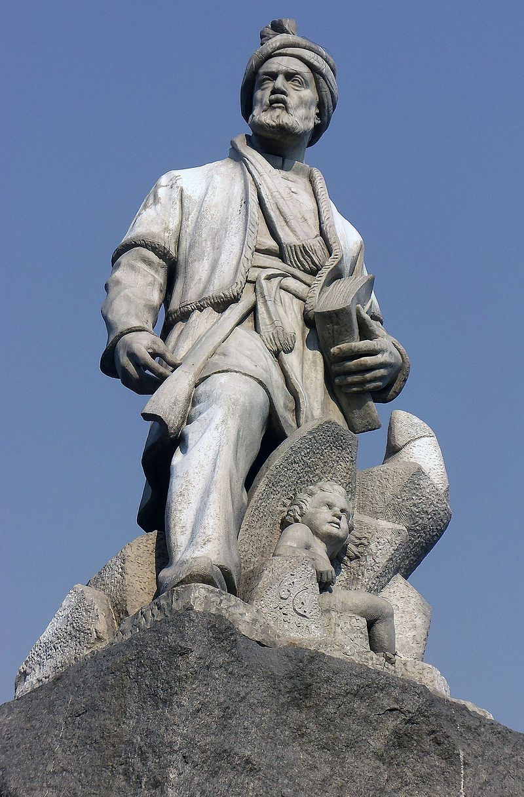

Ferdowsi was a Persian poet, best known for writing the Shahnameh, the epic poem that preserves the history and culture of ancient Persia.
Who was Ferdowsi? And what did he do?
- Ferdowsi was born around 940 AD in a village near the ancient city of Tus. His family belonged to the landowning class and lived a modest life. From childhood, he was surrounded by Persian traditions and stories.
- Ferdowsi received a good education in Tus. He studied Arabic and Islamic sciences, but his love for Persian remained stronger. Literature and poetry became his lifelong passion.
- He married at a young age and started a family. Despite responsibilities, he devoted much of his time to reading and writing. His dream was to preserve Persian heritage through poetry.
- By the age of thirty, Ferdowsi decided to begin a monumental task. He planned to collect Iran’s myths, legends, and history in one book. This decision marked the start of his great journey.
- He started writing the Shahnameh, or “Book of Kings.” The early drafts were based on older texts and oral traditions. Gradually, he shaped them into beautiful epic poetry.
- The Shahnameh covers three main eras: the mythical age, the heroic age, and the historical age. Each section tells the struggles of kings, heroes, and the people of Iran. The stories are filled with bravery, wisdom, and tragedy.
- Ferdowsi worked tirelessly for decades. He wrote and revised thousands of verses with great care. His dedication was fueled by love for his country and language.
- The Shahnameh eventually grew to more than 50,000 couplets. This made it one of the longest epic poems in world literature. Its scale and depth astonished readers. Ferdowsi’s writing style was unique. He avoided using many Arabic words to keep Persian pure. His verses became a model of classical Persian poetry.
- In his later years, Ferdowsi faced poverty. He sold parts of his land to support his family. Yet, his spirit remained strong and proud.
- He was deeply respected by ordinary people. They saw him as a guardian of their identity. His poetry gave them pride in their heritage.Ferdowsi included moral lessons in his stories. He praised justice, wisdom, and courage. He warned against tyranny, greed, and betrayal.
- Ferdowsi passed away around 1020 AD in Tus. He did not live to see how famous his work would become. His death marked the end of a lifetime of devotion.After his death, rulers realized the true value of his poetry. The Shahnameh spread across the Persian-speaking world. It became a source of inspiration for poets and kings alike.
- Today, Ferdowsi is remembered as the savior of the Persian language. His tomb in Tus is visited by thousands each year. He remains a symbol of cultural pride for Iranians.
One of Ferdowsi's poems
"Only the wise are truly powerful,and through knowledge, even the hearts of the elderly remain young."
Click here to read Ferdowsi's biography.